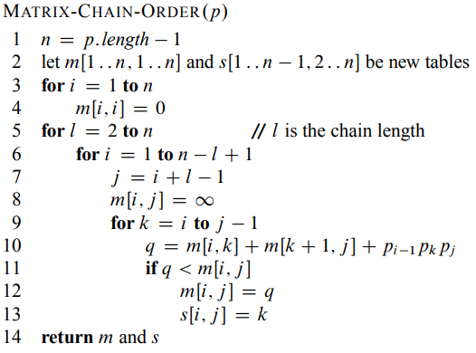

Aquí se encuentran algoritmos que resuelven problemas por medio de programación dinamica, la cual consiste en usar la informacion local para encontrar la solucion, la cual depende de cada paso.
En este problema se quiere encontrar la subseccion mas larga de una cadena que se puede encontrar en otra.
Se tienen dos algoritmos, uno que resuelve (LCS-LENGTH) y otro que imprime la cadena en orden(PRINT-LCS).
Descripción del algoritmo (LCS-LENGTH)
Este algoritmo busca la respuesta de la cadena. Tiene tiempo de ejecución: \( T(n) = \Theta (mn) \)
Pseudocódigo
Código de (Cormen, 2001).
Fuente bibliográfica
Thomas H. Cormen, C. (2001). Introduction to algorithms (p. 394). The MIT Press.
Descripción del algoritmo (PRINT-LCS)
Este algoritmo imprime la subseccion solucion en orden. Tiene tiempo de ejecución: \( T(n) = \Theta (n+m) \)
Pseudocódigo
Código de (Cormen, 2001).
Fuente bibliográfica
Thomas H. Cormen, C. (2001). Introduction to algorithms (p. 395). The MIT Press.
Implementación
Realizada en Javascript.
Entrada:
Recibe 2 listas con elementos a obtener la subseccion común más larga. No necesitan ser de mismo tamaño.Nota: Hola.
\( X \) =
\( Y \) =
Salida:
Matrices \( c \) y \( b\) que crean la solucion de la subseccion. Junto con la subseccion más larga.
Y tiempo de ejecución de LCS-LENGTH, PRINT-LCS y la impresion de todo al final sin contar llamadas u operaciones extras en JavaScript (dado que PRINT-LCS requiere \( b\) esta es la mejor forma de correr todo y simplificar las operaciones al usuario).
\( Respuesta \; \)
Orden de multiplicacion de matrices
La multiplicacion de matrices es una operacion cara especialmente cuando se trata de multiplicar varias matrices, por ello tiene mucha importancia el orden en que se multiplican para reducir el número de operaciones.
Se tienen dos algoritmos, uno que encuentra el mejor orden para multiplicar matrices(MATRIX-CHAIN-ORDER) y otro que lo imprime (PRINT-OPTIMAL-PARENTS).
Descripción del algoritmo (MATRIX-CHAIN-ORDER)
Este algoritmo busca el mejor orden de multiplicar matrices para hacer menos operaciones. Tiene tiempo de ejecución: \( T(n) = O (n^3) \)
Pseudocódigo

Código de (Cormen, 2001).
Fuente bibliográfica
Thomas H. Cormen, C. (2001). Introduction to algorithms (p. 375). The MIT Press.
Descripción del algoritmo (PRINT-OPTIMAL-PARENTS)
Este algoritmo imprime las matrices y los parentesis en la forma que reducen el número de operaciones a realizar. Tiene tiempo de ejecución: \( T(n) = \Theta (n) \)
Pseudocódigo
Código de (Cormen, 2001).
Fuente bibliográfica
Thomas H. Cormen, C. (2001). Introduction to algorithms (p. 377). The MIT Press.
Implementación
Realizada en Javascript.
Entrada:
Recibe 1 lista con los tamaños renglon, columna de las matrices a operar, claramente las matrices deben estar en el orden que les permitan multiplicarse.Nota: No hay nota.
La imagen muestra el ejemplo que viene predeterminado.
\( p \) =
Salida:
Matrices diagonales \( m \) y \( s \) que ilustran las operaciones en la solucion . Junto con las matrices y parentesis que separan el mejor orden de multiplicar.
Y tiempo de ejecución de LCS-LENGTH, PRINT-LCS y la impresion de todo al final sin contar llamadas u operaciones extras en JavaScript (dado que PRINT-LCS requiere \( b\) esta es la mejor forma de correr todo y simplificar las operaciones al usuario).
\( Respuesta \; \)
Problema de cortes con mayor ganancia
Aqui se desea obtener la mejor ganancia segun cortes de distinta longitud en una vara, de las cuales cada corte tiene un precio distinto.
Se tienen dos algoritmos pero en sí solo se diferencian por que uno es el inicio y otro hace la llamada recursivo que es donde se busca la solucion.
Descripción del algoritmo
Busca que precio es mejor segun el subproblema de cortes de menor tamaño, pero usando memoria evita repetir subcortes ya calculados. Tiene tiempo de ejecución: \( T(n) = O (n^2) \)
Pseudocódigo
Código de (Cormen, 2001).
Fuente bibliográfica
Thomas H. Cormen, C. (2001). Introduction to algorithms (p. 365). The MIT Press.
Implementación
Realizada en Javascript.
Entrada:
Recibe 1 lista con los precios posibles segun el tamaño del corte, la longitud de este arreglo es el n que se toma automaticamente para iniciar el algoritmo (siendo que vender todo sin cortes es otro precio).Nota: Listas largas pueden ser lentas por el tiempo de ejecución.
\( p \) =
Salida:
Máxima ganancia posible para una vara con los precios marcados en cada tamaño de corte.
Tiempo de ejecución de MEMOIZED-CUT-ROD y el tiempo de todo el wrapper.